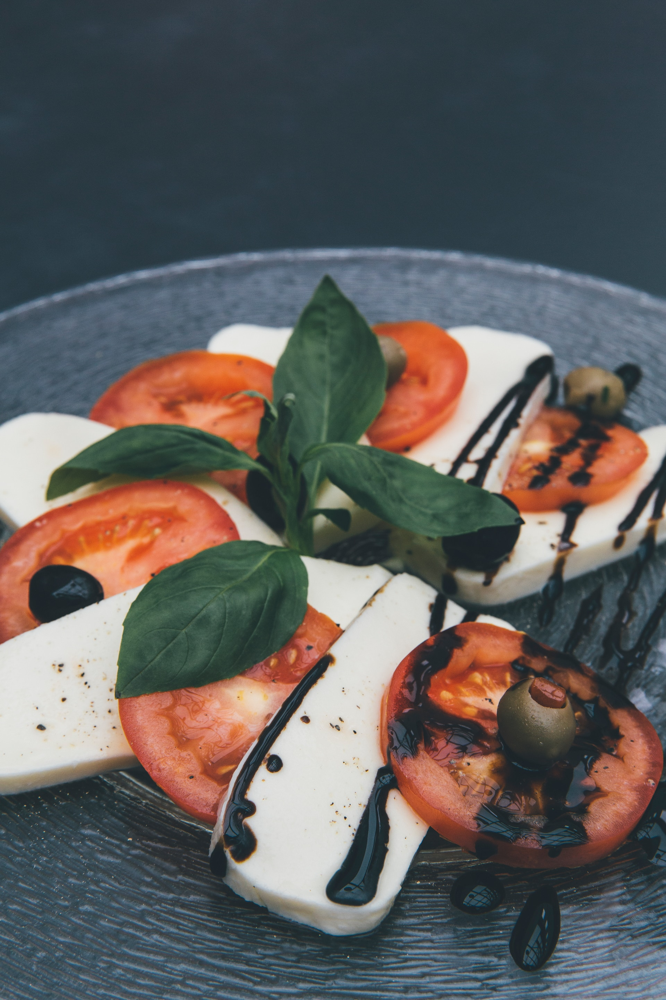

Tomato Basil Salad
Home
Breakfast
Lunch
Dinner

Ingredients
- 4 medium tomatoes, sliced
- 2 tablespoons fresh basil, chopped
- 2 tablespoons balsamic vinegar
- 1 tablespoon olive oil
- 1/2 teaspoon sugar
- 1/4 teaspoon pepper
- 6 medium-size slices mozzarella cheese
Instructions
- For salad, arrange tomato slices and maozzarella cheese on a large plate or platter. Sprinkle with basil.
- In a small bowl, whisk together dressing ingredients. Pour over tomatoes and mozarella cheese.
If you enjoyed this recipe, try our chicken masala recipe or our butternut-squash-soup recipe.